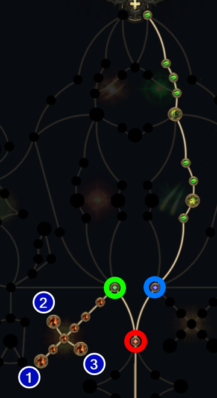
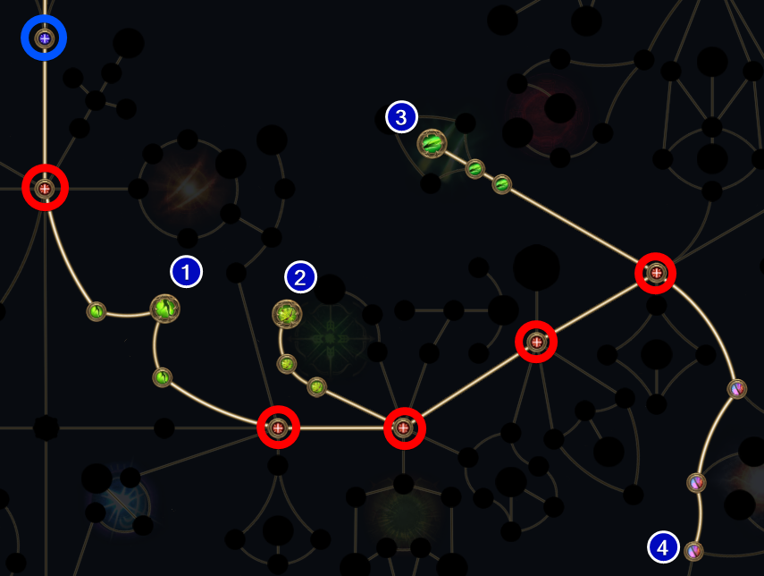

0.5 [Witchhunter] Permafrost Bolts Leveling - Pohx
Updated: March 05, 2026
- This guide is campaign specific rewrite of Pohx's 0.4 SSF Witchhunter guide using my own format.
Resources
- POBB.in not updated yetp
- FilterBlade
REGEX
Gear Regex - early campaign
"y: r|ph.*da|^\+.*ills$|\d.+life|movem|s: cr"
ACT 1 PROGRESSION

Weapon swapping is very important for this build. As soon as you pick up Permafrost Bolts in town, lock your weapon to both sets by right-clicking the Weapon Set 1 indicator. Once locked, set Permafrost Bolts to Set 1 and Fragmentation Round to Set 2. Now set Permafrost in hotkey > click the hotkey to "load" > click hotkey and select Crossbow Shot I. In another hotkey click on Fragmentation > click the hotkey to "load" > click on Crossbow Shot 2. This allows you to click the two skills in sequence saving you a button press.
- Talk to Renly > Uncut Skill > Permafrost Bolts
- Abandoned Camp > Uncut Skill > Explosive Grenades
- Mud Burrows > Uncut Support 1 > Ice Bite I put into Permafrost Bolts
- Areagne Witch > Uncut Support 1 > Elemental Armament I put into Fragmentation Rounds
- Red Vale > click "Refined Arms" for Tense Crossbow
- Rotten Druid > Uncut Support 1 > Elemental Armament I put into Permafrost Bolts
- Hunting Ground > Uncut Support 1 > Concentrated Area
- Tomb of Consort Rare > Uncut Support 1 > Use later check below
- Level 10 try to get Sturdy Crossbow base
- King of the Mist > Uncut Spirit 1 > Herald of Ice
- Uncut Support 1 > Magnified Area I
- Uncut Support 1 > Elemental Armament I
Gem upgrade order
Permafrost Bolts > Fragmentation Rounds > Explosive Rounds
Gemcutting order
Ice Bite I > 2 x Elemental Armament I > Concentrated Area > Magnified Area I > Elemental Armament I
Progression
- Permafrost Bolts: Ice Bite I+Elemental Armament I
- Fragmentation Rounds: Elemental Armament I+Concentrated Area
- Herald of Ice: Magnified Area I+Elemental Armament I
- Explosive Grenade: Multishot I+Magnified Area I
Level 1-14
ACT 2 PROGRESSION

- Level 22 > Uncut Skill 7 > Freezing Mark
- Permafrost Bolts: Ice Bite I+Elemental Armament II+Freeze
- Fragmentation Rounds: Elemental Armament II+Concentrated Area
- Herald of Ice: Magnified Area I+Elemental Armament I
- Freezing Mark: Prolonged Duration I
- Flash Grenade: No supports
Level 15-30
BONUS QUEST REWARDS
- ACT 2 Valley of the Titans (Medallion)
- 30% increased Charm Effect Duration / +1 Charm Slot
- ACT 3 Venom Crypts (Venom Draught)
- 25% increased Stun Threshold
- ACT 4 Halls Of The Dead (Tawhoa's Test)
- +5% to Lightning Resistance
- ACT 4 Halls Of The Dead (Tasalio's Test)
- +5% to Cold Resistance
- ACT 4 Halls Of The Dead (Ngamahu's Test)
- +5% to Fire Resistance
- ACT 4 Abandoned Prison (Goddess of Justice)
- 30% increased Life Recovery from Flasks
- INTERLUDE 2 Qiman (Seven Pillars)
- 15% increased Global Defences